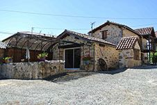

4 personnes
La Bergerie
Une ancienne bergerie restaurée, avec une chambre à lit double, une chambre à deux lits simples et une terrasse privative à la vue dégagée sur la campagne. Elle est équipée pour recevoir jusqu'à 16 personnes à table.